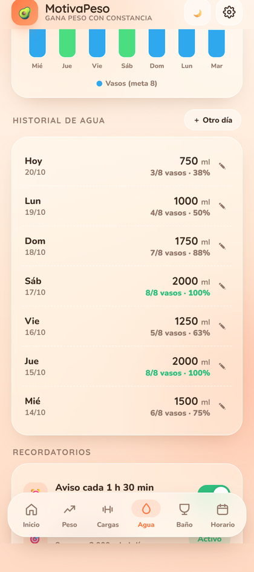
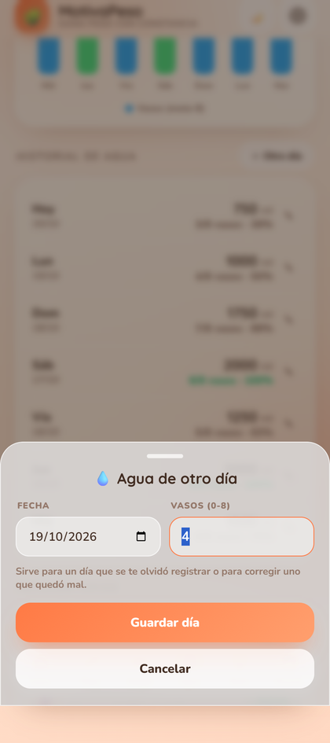
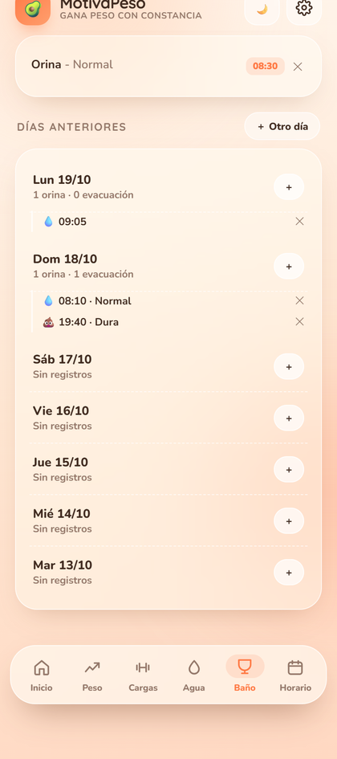
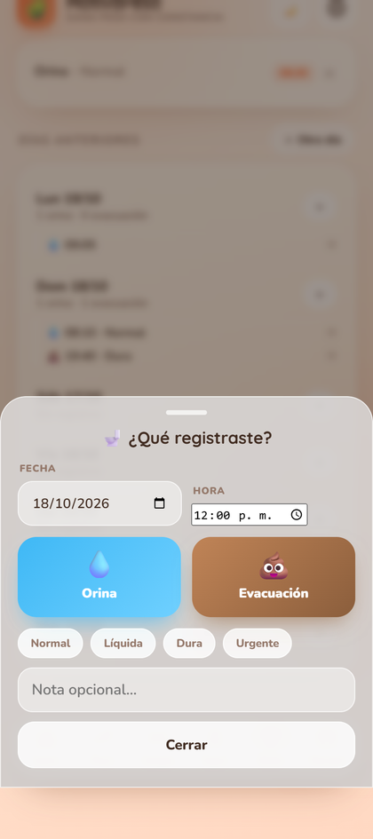

Ahora puedes anotar el agua o el baño de un día pasado, y corregir un día que quedó mal. También se puede borrar un registro viejo, no solo los de hoy.
Botón "＋ Otro día" en el historial de agua. Eliges la fecha y cuántos vasos tomaste. También funciona el lápiz ✎ de cada fila para corregir ese día.
La hoja de baño ahora tiene fecha y hora. Entras desde el "＋" de cada día en "Días anteriores" o desde "＋ Otro día".
Cada evento de los días anteriores tiene su ✕. Antes solo se podía borrar lo de hoy.
Si editas el día de hoy, el contador de vasos de la pantalla principal se actualiza igual. Si editas un día pasado, el día de hoy no se toca.




Revisado antes de publicar, comparando el APK de la 2.1 contra el de la 2.2:
com.motivapeso.appce7961d529c2454d7ed288a928c8af7f6a4c75661f1c92f06a8d160e22762266versionCode sube siempre (2 → 3 → 4 → 5), que es lo que Android exige para aceptar una actualización.main) y el tag coincide con la versión, así que el build no choca con nada.